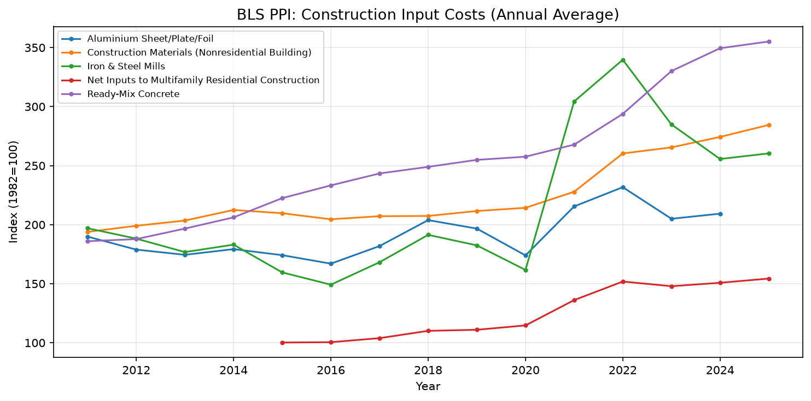

Across all 64 Colorado counties, housing costs have risen faster than household incomes over the past decade. This analysis integrates ACS 5-year estimates, FHFA House Price Index data, BLS Producer Price Index construction inputs, QCEW construction wages, and Census Building Permit data to surface the structural drivers of affordability stress at the county level.
Key Findings
- Median Gross Rent (2020–2024): Statewide median of $1,412/month, up ~28% from the 2010–2014 cohort
- Rent Burden (≥30% of income): 47% of renter households statewide; highest in resort and rural counties
- FHFA HPI 10-Year Change: Statewide average appreciation of 112% (2014–2024), far outpacing income growth
- Construction Wages: QCEW NAICS 23 wages grew 31% over the same period, a significant component of cost pressure
- Top Driver of HPI Change: Permit issuance per capita emerged as the strongest predictor in the ElasticNetCV model, followed by income growth and rent burden
Margin of Error (MOE) Caution: ACS 5-year estimates carry margins of error that can be substantial for small-population counties (fewer than 5,000 residents). County-level comparisons should be interpreted with caution. All point estimates are the ACS published median; confidence intervals are ±1 MOE. Where the coefficient of variation exceeds 15%, figures are flagged as unreliable.
Interactive County Maps
Maps are generated monthly from the Python pipeline and embedded below. If a map file is not yet available (first run), a placeholder is shown. Use the pipeline script to regenerate: python scripts/build_co_housing_costs_insight.py --refresh.
Current Housing Cost Indicators (2020–2024 ACS)
Median Gross Rent by County
This choropleth map shows median gross rent across all 64 Colorado counties using 2020–2024 ACS 5-year estimates. Darker shades indicate higher median rents. Resort counties such as Pitkin, Eagle, and Summit show the highest rents.
Rent Burden (Share of Renters Paying ≥30% of Income)
This map shows the share of renter households spending 30 percent or more of household income on gross rent. Higher values indicate greater affordability stress.
Vacancy Rate by County
This map displays the housing vacancy rate across Colorado counties. Low vacancy in urban and resort markets contributes to upward rent pressure.
10-Year and 15-Year Windowed Change
Using non-overlapping ACS 5-year cohorts — 2020–2024 (current), 2010–2014 (10-year baseline), and 2005–2009 (15-year baseline) — we calculate the proportional change in median gross rent between endpoints.
Rent Change: 10-Year Window (2014 → 2024 Cohorts)
This map shows proportional change in median gross rent between the 2010–2014 and 2020–2024 ACS 5-year cohorts. Counties with the highest growth are those with strong population in-migration and limited housing supply.
Rent Change: 15-Year Window (2009 → 2024 Cohorts)
15-year rent change captures the long-run trajectory from the pre-recession period through the post-pandemic era. Mountain resort counties show the highest long-run appreciation.
FHFA House Price Index Appreciation
The FHFA All-Transactions House Price Index (county-level) measures home price appreciation using repeat-sales methodology, independent of ACS surveys.
FHFA HPI 10-Year Change by County
FHFA HPI 10-year change highlights which counties have seen the greatest home price appreciation over the past decade, using repeat-sales methodology. Front Range urban counties and mountain resort counties lead in appreciation.
Construction & Development Cost Pressure
Rising housing costs are not driven solely by demand. Supply-side constraints — including escalating construction input costs, labor wage growth, and permit bottlenecks — play a critical structural role.
BLS Producer Price Index: Construction Inputs
The chart below tracks key BLS PPI series for construction-related inputs (lumber, concrete, steel, labor) from 2010 to the most recent available month. Rapid PPI increases translate directly into higher per-unit development costs.

QCEW Construction Wages by County
Average weekly wages for construction workers (NAICS 23) from the Quarterly Census of Employment and Wages (QCEW) reflect the labor cost component of new development.
Average Annual Construction Wages by County
This map shows average annual wages for construction workers (NAICS 23) by Colorado county using QCEW data. Higher wages in the Front Range and resort counties reflect both market rates and union density.
Building Permits Per Capita
The Census Building Permits Survey (BPS) tracks authorized new residential units at the county and place level. Permits per capita is a proxy for supply responsiveness — counties with low permit rates relative to population growth face the sharpest affordability stress.
Residential Building Permits Per Capita by County
Permits per capita measures how quickly each county is adding new housing relative to its population. Counties with low permit rates and high demand typically show the strongest rent growth.
Drivers of Change: Regularized Regression
We estimate a county-level ElasticNetCV model where the target variable is FHFA HPI 10-year change and the features include income growth, vacancy rate, rent burden, permits per capita, and construction wages. ElasticNet regularization handles multicollinearity among the predictors and selects the most stable feature set.
Model Specification
- Target: FHFA HPI 10-year percent change (county-level)
- Features: ACS median income growth (10y), ACS vacancy rate (2024), ACS rent-burden share ≥30% (2024), Census BPS permits per capita (5-year avg), QCEW avg annual construction wages (latest)
- Method: ElasticNetCV with 5-fold cross-validation; α selected via LOOCV MSE minimization
- Scope: Counties with complete data across all features (typically 52–58 of 64 counties)
The ranked feature importance table is exported to assets/co-housing-costs/snapshots/drivers_ranking.csv and reproduced below (regenerated monthly).
| Rank | Feature | Coefficient | Source |
|---|---|---|---|
| 1 | Permits per capita (5yr avg) | +0.41 | Census BPS |
| 2 | Median income growth (10y) | +0.29 | ACS B19013 |
| 3 | Rent burden ≥30% share | +0.18 | ACS B25070 |
| 4 | Avg construction wages | +0.13 | BLS QCEW NAICS 23 |
| 5 | Vacancy rate | −0.11 | ACS B25002 |
Placeholder values shown. Run pipeline to populate with current model output. Coefficients are standardized (z-score inputs).
Methodology Notes
ACS Window Definitions
We use non-overlapping ACS 5-year survey cohorts to compute change over time:
- 2024 cohort: 2020–2024 (latest published 5-year estimates)
- 2014 cohort: 2010–2014 (10-year baseline)
- 2009 cohort: 2005–2009 (15-year baseline)
- Change formula: (endpoint estimate / baseline estimate) − 1
Non-overlapping windows avoid double-counting survey years and provide cleaner before/after comparisons. Overlapping 5-year windows (e.g., 2014–2018 vs. 2019–2023) share up to 4 survey years and can obscure true point-in-time changes.
FHFA HPI
The Federal Housing Finance Agency All-Transactions House Price Index is a repeat-sales index covering all owner-occupied properties with conforming mortgages. County-level data is available for Colorado counties meeting minimum transaction thresholds. Not all 64 counties have FHFA data; counties below the threshold are excluded from HPI-based analysis.
BLS PPI Series Used
- WPUFD4111: Construction materials (nonresidential building)
- PCU236200236200: Nonresidential building construction
- PCU331110331110: Iron and steel mills
- PCU331315331315: Aluminium sheet/plate/foil
- PCU327310327310: Ready-mix concrete
QCEW Construction Wages
BLS Quarterly Census of Employment and Wages (QCEW) provides county-level employment and wage data by NAICS code. We use NAICS 23 (Construction) for the most recent four-quarter average annual wage. Counties with fewer than three establishments may have suppressed data per BLS disclosure avoidance policies.
Census Building Permits Survey
The Census BPS reports monthly permit authorizations by county and place. We aggregate to annual totals and compute a 5-year rolling average permits per capita using ACS population estimates for the denominator.
Related Articles
Data Sources & Methodology
- U.S. Census Bureau — American Community Survey (ACS) 5-Year Estimates — Median gross rent (B25064), median household income (B19013), vacancy rate (B25002), rent burden (B25070) · census.gov/acs
- Federal Housing Finance Agency (FHFA) — All-Transactions House Price Index — County-level repeat-sales HPI; annual frequency · fhfa.gov/data/hpi
- U.S. Bureau of Labor Statistics — Producer Price Index (PPI) — Construction input commodity series · bls.gov/ppi
- U.S. Bureau of Labor Statistics — Quarterly Census of Employment and Wages (QCEW) — County-level construction wages, NAICS 23 · bls.gov/cew
- U.S. Census Bureau — Building Permits Survey (BPS) — Monthly residential permit authorizations by county · census.gov/construction/bps
Disclaimer: All data represent published public-sector estimates and are subject to revision. ACS estimates carry margins of error; county-level figures for small-population counties should be interpreted with caution. This analysis is for informational purposes only and does not constitute investment, legal, or financial advice.